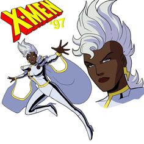

 Tempestade, ou Ororo Munroe, é uma das mutantes mais poderosas e icônicas do universo Marvel e uma das líderes dos X-Men. Nascida no Egito como filha de uma princesa africana e um fotógrafo americano, Ororo ficou órfã na infância e passou a viver nas ruas do Cairo, onde desenvolveu habilidades de sobrevivência. Ela possui a habilidade de controlar o clima, permitindo-lhe criar tempestades, relâmpagos e ventos. Tempestade foi recrutada por Charles Xavier para se juntar aos X-Men, onde se tornou uma das primeiras mulheres a fazer parte da equipe. Com o tempo, ela se tornou uma líder respeitada, conhecida por sua força, compaixão e determinação em lutar pela paz entre humanos e mutantes. Ao longo de sua história, Tempestade enfrentou diversos vilões e desafios, incluindo sua relação com o anti-herói T'Challa, o Pantera Negra, com quem se casou. Ela também lidou com questões de identidade, herança e seu papel como uma figura de liderança tanto nos X-Men quanto na comunidade mutante. Tempestade é uma representação poderosa de força e resiliência, simbolizando esperança e luta pela igualdade.